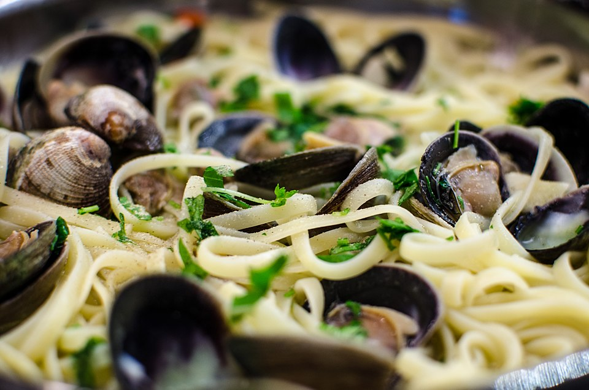

Frutos do mar · Massas com frutos do mar
Talharim com vôngole

Ingredientes
- 1 kg de vôngole
- 1 pacote de macarrão tipo talharim (500 g)
- 6 colheres (sopa) de azeite
- 3 dentes de alho
- 4 colheres (sopa) de salsinha picada
- Sal e pimenta a gosto
Modo de preparo
- Escove e lave bem os vôngoles.
- Aqueça o azeite, doure os alhos e retire-os. Junte vôngole, salsinha, sal e pimenta; tampe em fogo baixo até abrir as conchas.
- Cozinhe o macarrão al dente, escorra, regue com o líquido do vôngole, enfeite com as conchas e sirva.